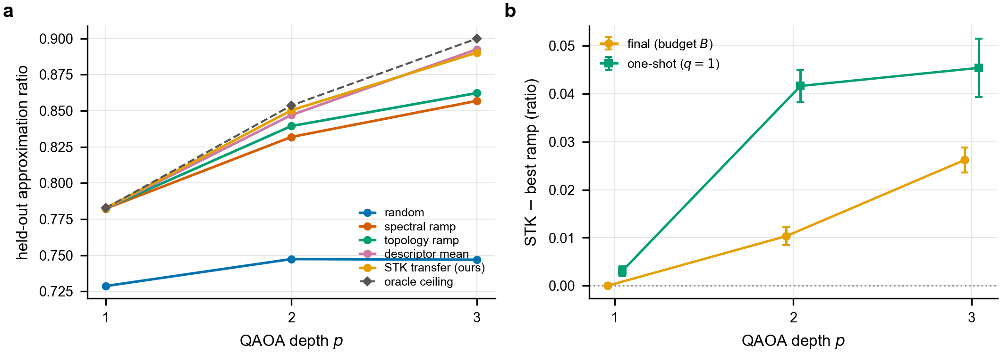
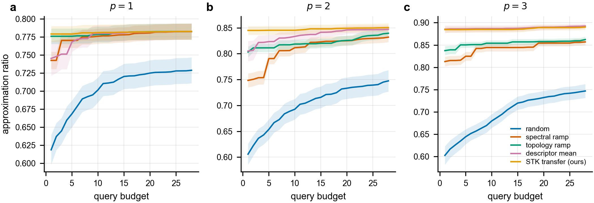

The warm start is learned transfer: a relabeling-invariant, positive-definite spectral-truncation kernel on the graph Laplacian donates the optimized depth-p schedule of the single most similar training graph — one-shot and near-optimal, tying an adiabatic ramp at depth one and beating it by a margin that grows with depth (+0.026 at p=3). The depth-p QAOA objective is an exact statevector expectation, the regime GPU statevector backends (NVIDIA cuQuantum / cuStateVec) accelerate, and every number regenerates from fixed seeds.
Background and motivation
On near-term quantum hardware the dominant cost of QAOA is the number of circuit evaluations spent searching for variational angles. A warm start that supplies a near-optimal angle schedule could remove most of that cost — yet learned warm starts have a reputation for matching, not beating, simple physics-based initializers. We revisit that verdict as a function of depth.
The quantum approximate optimization algorithm (QAOA) prepares, at depth $p$, the state $|\bm\gamma,\bm\beta\rangle=\prod_{\ell=1}^{p}e^{-\mathrm{i}\beta_\ell B}e^{-\mathrm{i}\gamma_\ell C}|+\rangle^{\otimes n}$ with cost operator $C=\sum_{(u,v)\in E}\tfrac12(1-Z_uZ_v)$ and mixer $B=\sum_v X_v$, and maximizes the expected cut $\langle C(\bm\gamma,\bm\beta)\rangle$ over the $2p$-angle schedule. Each evaluation of $\langle C\rangle$ on hardware consumes many circuit executions, so the operative figure of merit is the cut a policy reaches within a fixed query budget.
The depth-one trap. At depth one a warm start is a single pair $(\gamma_0,\beta_0)$, and a one-line spectral or adiabatic rule already fixes the only relevant angle scale; under a matched budget every structure-aware policy ties such a rule. This depth-one parity has been read as evidence that topology-conditioned warm starts do not help. We show that conclusion is an artifact of $p=1$: beyond depth one a warm start must specify a whole schedule that a single physical scale can only crudely approximate, and there topology conditioning begins to pay.
Why a warm start is the lever. MaxCut is NP-hard and its best known classical guarantee rests on a semidefinite relaxation; QAOA is a leading near-term candidate, and a depth-$p$ circuit alternates a cost-Hamiltonian phase with a transverse-field mixer — itself a product-formula (Trotterized) circuit — parameterized by $2p$ angles. On real devices each evaluation of $\langle C\rangle$ costs many circuit executions, and angle optimization is the primary bottleneck, exacerbated by barren plateaus and cost concentration in high-dimensional landscapes. A warm start supplies good initial angles so the optimizer begins inside a high-quality basin. The premise that one can be learned rests on three observations from the literature: the QAOA objective concentrates across typical instances of a given structure, optimal parameters transfer between random graphs and across sizes, and dedicated schemes — continuation and annealing schedules, the interpolation growth of good angles with depth, relaxation rounding, and classical-surrogate or meta-learning approaches — can place the optimizer in a good basin. What has been comparatively sparse is the controlled, leakage-aware, query-counted comparison against a strong yet simple baseline that this work supplies.
Method: spectral-truncation-kernel schedule transfer
The methodological core is a relabeling-invariant, positive-definite kernel on the truncated graph Laplacian spectrum, under which the most similar training graph donates its optimized depth-$p$ schedule — a single real optimum copied wholesale rather than several averaged.
Spectral-truncation representation
Each graph is mapped to $\sigma_r(G)$, the $r$ smallest non-zero eigenvalues of the normalized Laplacian $\mathcal{L}=D^{-1/2}LD^{-1/2}$ — a finite low-frequency window of the graph operator, in the spirit of the C*-algebraic spectral-truncation kernels of Hashimoto et al. (2024), adapted from operators to graphs. Because the Laplacian spectrum is a similarity invariant, $\sigma_r(\pi G)=\sigma_r(G)$ for every relabeling $\pi$.
Positive-definite, invariant kernel
The similarity is the product kernel $k(G,G')=\exp\!\big(-\|\sigma_r(G)-\sigma_r(G')\|^2/2\ell_s^2\big)\,\exp\!\big(-\|\phi(G)-\phi(G')\|^2/2\ell_d^2\big)$, a Hadamard product of two RBF kernels on standardized, relabeling-invariant features (the truncated spectrum and a topology descriptor $\phi$) with median-heuristic bandwidths. It is positive definite by the Schur product theorem and invariant by construction.
Transfer, not averaging
Optimal QAOA schedules are not unique: time-reversal and mixer/cost periodicities place equally good schedules in distinct, symmetry-related basins. Averaging several optimized schedules can land between basins; transferring the schedule of the single kernel-nearest training graph copies one real optimum and is near-optimal on the first query.
Query-counted refiner
The transferred schedule seeds a coordinate-ascent refiner that counts every objective evaluation against a fixed budget $B$; the running-best approximation ratio versus the number of evaluations — the query-budget frontier — and its first point, the one-shot ratio, are the hardware-relevant figures of merit.
Principal contributions
- A depth-resolved finding.Within a controlled, query-counted, leakage-checked benchmark, the depth-one ``learned warm starts only match'' verdict is shown to be an artifact of $p=1$: topology-conditioned warm starts tie an adiabatic ramp at depth one but surpass it for $p\ge2$ by a margin that grows with depth.
- A transferable warm-start operator.The spectral-truncation kernel: a positive-definite, relabeling-invariant kernel on the truncated Laplacian spectrum whose nearest neighbour transfers a single optimized depth-$p$ schedule. It attains the best final and one-shot approximation ratios at the tested depths and is the most query-efficient warm start.
- A cross-verified, reproducible benchmark.A proven relabeling-invariant representation and kernel, a depth-one objective cross-verified to $10^{-9}$ by analytic and statevector evaluators, exact approximation ratios against a brute-force oracle, family-held-out transfer with a programmatic leakage check, and a
pip-installable package that regenerates every figure, table, and number from fixed seeds.
Empirical results reported scale
Six families (Erdős–Rényi, random regular, Barabási–Albert, Watts–Strogatz, 2-D grid, stochastic block), 84 connected graphs, sizes $n\in\{8,10,12,14\}$, depths $p\in\{1,2,3\}$, family-held-out with a leakage-clean check. Every value is generated by the package from seed 0.

Held-out approximation ratio versus depth Table 1
| $p$ | best ramp | descriptor mean | STK (ours) | oracle | $\Delta_{\text{final}}$ | $\Delta_{\text{one-shot}}$ |
|---|---|---|---|---|---|---|
| 1 | 0.7825 | 0.7824 | 0.7825 | 0.7827 | +0.0000 ± 0.0001 | +0.0030 |
| 2 | 0.8394 | 0.8470 | 0.8503 | 0.8536 | +0.0103 ± 0.0019 | +0.0416 |
| 3 | 0.8622 | 0.8925 | 0.8902 | 0.8999 | +0.0262 ± 0.0026 | +0.0454 |
$\Delta_{\text{final}}$ and $\Delta_{\text{one-shot}}$ are the paired mean differences between STK and the best per-instance ramp on the final-budget and first-query ratios; both $p\ge2$ final advantages lie outside their paired 95% confidence intervals. The averaging-based descriptor mean also improves on the ramp at depth, so topology conditioning — not the specific estimator — is what helps; transfer is distinguished by its one-shot quality.
Per-policy performance at $p=2$ Table 2
| policy | final ratio | ±95% CI | one-shot ($q{=}1$) |
|---|---|---|---|
| random | 0.7474 | 0.0208 | 0.6057 |
| spectral ramp | 0.8319 | 0.0095 | 0.7483 |
| topology ramp | 0.8394 | 0.0088 | 0.8032 |
| descriptor mean | 0.8470 | 0.0080 | 0.8050 |
| STK transfer (ours) | 0.8503 | 0.0081 | 0.8449 |
STK attains both the best final ratio and, by a wide margin, the best one-shot ratio: its transferred schedule is near-optimal on the first evaluation, whereas the averaging-based learner reaches a competitive final ratio only after the refiner repairs its between-basins seed.

=2.">Theoretical guarantees
Each empirical guarantee is proved in the manuscript and asserted numerically in the test suite.
The truncated spectrum $\sigma_r$ and the descriptor $\phi$ are relabeling invariants, so $k(\pi G,\cdot)=k(G,\cdot)$; and $k$, a Hadamard product of two RBF kernels, is positive definite by the Schur product theorem — for any finite set of graphs the Gram matrix is symmetric positive semi-definite.
The kernel is a valid Mercer kernel on isomorphism classes, verified to $10^{-8}$ for invariance and asserted positive semi-definite in the tests.The STK policy outputs $\Theta(G)=\theta_{j^\star}$ with $j^\star=\arg\max_i k(G,G_i)$; then $\Theta(\pi G)=\Theta(G)$ and $\Theta$ is a deterministic function of the isomorphism class given the seeded training set.
The warm start is reproducible and cannot exploit node-order leakage.For every $(\gamma,\beta)$ and every $G$, the depth-one per-edge closed form summed over $E$ equals the statevector expectation $\langle\gamma,\beta|C|\gamma,\beta\rangle$; the two are the same real-analytic function (verified to $10^{-9}$), certifying the statevector objective used at every depth.
Approximation ratios are exact, measured against a brute-force MaxCut oracle.The running-best ratio $r_t=\max(r_{t-1},\rho_t)$ is monotone and satisfies $r_t\ge r_0$; coordinate ascent remains in the basin it is seeded in within the budget, so a higher-quality warm-start basin is not equalized at depth.
This is why a better-seeded schedule survives to the final ratio for $p\ge2$, whereas at $p=1$ all head starts are equalized.Interactive demonstration: the schedule gap grows with depth
This in-browser demonstration computes exactly the quantities the paper analyzes — the depth-$p$ QAOA expected cut by exact statevector simulation and the true MaxCut by enumeration — on small example graphs. It contrasts the non-learned adiabatic ramp with a near-optimal schedule (the object STK transfers from a spectrally similar graph), showing that the ramp falls progressively further behind as depth grows. It illustrates the mechanism; it does not re-run the family-held-out benchmark.
For the selected graph the demonstration computes the exact MaxCut $C^\star$, the depth-$p$ approximation ratio of the degree-anchored adiabatic ramp, and the approximation ratio of a near-optimal schedule found by multi-start coordinate ascent on the exact statevector objective. The ramp uses a single physical scale; the near-optimal schedule adapts all $2p$ angles to the instance. The gap between them — negligible at $p=1$, widening at $p=2,3$ — is precisely the headroom that spectral-truncation-kernel transfer captures by copying such a schedule from a spectrally similar graph.
Significance
The work contributes a transferable, theoretically grounded warm-start operator and a controlled benchmark that resolves where learned QAOA warm starts help.
For the field. A proven relabeling-invariant representation and kernel, a query-counted refiner with one-shot and frontier views, a cross-verified objective, exact approximation ratios, and family-held-out splits with leakage checks together form a reusable yardstick against which future warm-start policies can be measured. The benchmark separates two questions the literature often conflates: whether learned warm starts help at all (they do, beyond depth one) and whether the form of learning matters for efficiency (transfer is near-optimal per query while averaging needs refinement).
For practice. The transferred schedule is near-optimal on the first query, precisely the regime in which each query is an expensive circuit execution; the spectral-truncation kernel makes ``most similar graph'' a principled, relabeling-invariant choice, and a trained graph-neural backend drops into the same interface without altering the harness.
- Graphs are small ($n\le16$) so that exact MaxCut ground truth remains tractable; behaviour at advantage-relevant sizes is untested.
- Transfer targets are near-optimal schedules from an interpolation-seeded optimizer rather than certified global optima; the comparison to the label-free ramps is unaffected.
- Graphs are synthetic and the run uses a single master seed, so confidence intervals cover the graphs within that run, not independent dataset redraws.
- Objective values are noiseless classical evaluations; depth is at most three and no quantum-hardware or asymptotic-advantage claim is made.
Reproducibility
The pipeline is CPU-only with no quantum-software dependency, and every number is regenerated from fixed seeds into an authoritative artifact, results/summary.json.
The complete reference implementation accompanies the manuscript as the pip-installable package topoqaoa in submission/code: graph generators, the relabeling-invariant descriptors and the spectral-truncation kernel, the analytic and statevector QAOA evaluators, the interpolation-seeded schedule-labelling oracle, the budgeted refiner, all warm-start policies, family-held-out splitting and leakage checks, metrics, the runner, the figure and table generators, and the test suite — including the closed-form-versus-statevector, descriptor- and kernel-invariance, and kernel positive-definiteness checks.
# obtain identical results — CPU only, a few minutes on a laptop pip install specops-stk # distribution name; imports as the topoqaoa module # or install the accompanying source artifact directly: pip install ./submission/code # numpy, scipy, networkx, scikit-learn, matplotlib, pyyaml cd submission/code python3 scripts/run.py --config configs/full.yaml --out results # regenerate the depth/frontier/family figures and the LaTeX tables + macros python3 scripts/make_tables.py python3 scripts/make_figures.py # or, via the installed entry point, in one command: topoqaoa-reproduce --config configs/full.yaml # correctness checks: closed-form vs statevector (1e-9), invariance (1e-8), kernel PSD, leakage pytest -q
A single master seed (0) deterministically fixes graph generation, the schedule-labelling oracle, and every policy, and the leakage check passes on every fold (leakage_clean: true). Rebuilding from the released code reproduces every reported value; an audit script then confirms that each number traces to a generated artifact and that the depth-dependent claim holds in the artifact.
Cite this work
The reference implementation is distributed as the pip-installable package specops-stk. If the method, the benchmark, or the software is used, please cite the manuscript.
@article{huynh2026topoqaoa,
author = {Huynh, Molena},
title = {Spectral-truncation graph kernels for {QAOA} warm starts:
topology-conditioned schedule transfer beyond depth one},
journal = {Manuscript},
year = {2026},
note = {Part of the spectral-truncation operators program},
url = {https://thmolena.github.io/Topological-Graph-for-QAOA/submission/main.pdf}
}
Software metadata is additionally provided in submission/code/CITATION.cff.
Related work and references
QAOA [1] and its alternating-operator generalization [2] are the workhorse benchmark for variational quantum algorithms; the warm-start question here builds on parameter concentration and transfer in QAOA (Brandão et al. [14]; Galda et al. [15]; Shaydulin et al. [16]), on adiabatic and interpolation-based initializers (Sack & Serbyn [19]; Zhou et al. [4]), and on permutation-invariant graph representations from spectral graph theory, Weisfeiler–Lehman kernels, and graph neural networks ([25], [26], [27], [30]). Its kernel is a graph adaptation of the $C^\ast$-algebraic spectral-truncation kernels of Hashimoto et al. [5], with the graph Laplacian as the truncated operator and QAOA schedule transfer as the downstream task. The full bibliography of the manuscript follows.
- E. Farhi, J. Goldstone and S. Gutmann. “A quantum approximate optimization algorithm.” arXiv:1411.4028 (2014). arXiv:1411.4028
- S. Hadfield, Z. Wang, B. O'Gorman, E. G. Rieffel, D. Venturelli and R. Biswas. “From the quantum approximate optimization algorithm to a quantum alternating operator ansatz.” Algorithms 12(2), 34 (2019). doi:10.3390/a12020034
- Z. Wang, S. Hadfield, Z. Jiang and E. G. Rieffel. “Quantum approximate optimization algorithm for MaxCut: a fermionic view.” Physical Review A 97(2), 022304 (2018). doi:10.1103/PhysRevA.97.022304
- L. Zhou, S.-T. Wang, S. Choi, H. Pichler and M. D. Lukin. “Quantum approximate optimization algorithm: performance, mechanism, and implementation on near-term devices.” Physical Review X 10(2), 021067 (2020). doi:10.1103/PhysRevX.10.021067
- Y. Hashimoto, A. Hafid, M. Ikeda and H. Kadri. “Spectral truncation kernels: noncommutativity in $C^\ast$-algebraic kernel machines.” arXiv:2405.17823 (2024). arXiv:2405.17823
- B. Schölkopf and A. J. Smola. Learning with Kernels: Support Vector Machines, Regularization, Optimization, and Beyond. MIT Press (2002).
- M. Nguyen and N. Jing. “Zassenhaus expansion in solving the Schrödinger equation.” arXiv:2505.09441 (2025). arXiv:2505.09441
- N. Jing and M. Nguyen. “Complexity bounds for Hamiltonian simulation in unitary representations.” arXiv:2603.07231 (2026). arXiv:2603.07231
- M. X. Goemans and D. P. Williamson. “Improved approximation algorithms for maximum cut and satisfiability problems using semidefinite programming.” Journal of the ACM 42(6), 1115–1145 (1995). doi:10.1145/227683.227684
- R. M. Karp. “Reducibility among combinatorial problems.” In Complexity of Computer Computations, 85–103 (Springer, 1972). doi:10.1007/978-1-4684-2001-2_9
- J. Preskill. “Quantum computing in the NISQ era and beyond.” Quantum 2, 79 (2018). doi:10.22331/q-2018-08-06-79
- M. Cerezo et al. “Variational quantum algorithms.” Nature Reviews Physics 3(9), 625–644 (2021). doi:10.1038/s42254-021-00348-9
- J. R. McClean, S. Boixo, V. N. Smelyanskiy, R. Babbush and H. Neven. “Barren plateaus in quantum neural network training landscapes.” Nature Communications 9(1), 4812 (2018). doi:10.1038/s41467-018-07090-4
- F. G. S. L. Brandão, M. Broughton, E. Farhi, S. Gutmann and H. Neven. “For fixed control parameters the quantum approximate optimization algorithm's objective function value concentrates for typical instances.” arXiv:1812.04170 (2018). arXiv:1812.04170
- A. Galda, X. Liu, D. Lykov, Y. Alexeev and I. Safro. “Transferability of optimal QAOA parameters between random graphs.” In IEEE International Conference on Quantum Computing and Engineering (QCE), 171–180 (2021). doi:10.1109/QCE52317.2021.00034
- R. Shaydulin, P. C. Lotshaw, J. Larson, J. Ostrowski and T. S. Humble. “Parameter transfer for quantum approximate optimization of weighted MaxCut.” ACM Transactions on Quantum Computing 4(3), 1–15 (2023). doi:10.1145/3584706
- P. C. Lotshaw, T. S. Humble, R. Herrman, J. Ostrowski and G. Siopsis. “Empirical performance bounds for quantum approximate optimization.” Quantum Information Processing 20(12), 403 (2021). doi:10.1007/s11128-021-03342-3
- D. J. Egger, J. Mareček and S. Woerner. “Warm-starting quantum optimization.” Quantum 5, 479 (2021). doi:10.22331/q-2021-06-17-479
- S. H. Sack and M. Serbyn. “Quantum annealing initialization of the quantum approximate optimization algorithm.” Quantum 5, 491 (2021). doi:10.22331/q-2021-07-01-491
- M. Streif and M. Leib. “Training the quantum approximate optimization algorithm without access to a quantum processing unit.” Quantum Science and Technology 5(3), 034008 (2020). doi:10.1088/2058-9565/ab8c2b
- G. Verdon, M. Broughton, J. R. McClean, K. J. Sung, R. Babbush, Z. Jiang, H. Neven and M. Mohseni. “Learning to learn with quantum neural networks via classical neural networks.” arXiv:1907.05415 (2019). arXiv:1907.05415
- S. Khairy, R. Shaydulin, L. Cincio, Y. Alexeev and P. Balaprakash. “Learning to optimize variational quantum circuits to solve combinatorial problems.” In Proceedings of the AAAI Conference on Artificial Intelligence 34(3), 2367–2375 (2020). doi:10.1609/aaai.v34i03.5616
- G. G. Guerreschi and A. Y. Matsuura. “QAOA for Max-Cut requires hundreds of qubits for quantum speed-up.” Scientific Reports 9(1), 6903 (2019). doi:10.1038/s41598-019-43176-9
- B. Weisfeiler and A. Leman. “The reduction of a graph to canonical form and the algebra which appears therein.” NTI, Series 2 9, 12–16 (1968).
- N. Shervashidze, P. Schweitzer, E. J. van Leeuwen, K. Mehlhorn and K. M. Borgwardt. “Weisfeiler–Lehman graph kernels.” Journal of Machine Learning Research 12, 2539–2561 (2011).
- T. N. Kipf and M. Welling. “Semi-supervised classification with graph convolutional networks.” In International Conference on Learning Representations (ICLR) (2017). arXiv:1609.02907
- J. Gilmer, S. S. Schoenholz, P. F. Riley, O. Vinyals and G. E. Dahl. “Neural message passing for quantum chemistry.” In International Conference on Machine Learning (ICML), 1263–1272 (2017). arXiv:1704.01212
- K. Xu, W. Hu, J. Leskovec and S. Jegelka. “How powerful are graph neural networks?” In International Conference on Learning Representations (ICLR) (2019). arXiv:1810.00826
- P. Veličković, G. Cucurull, A. Casanova, A. Romero, P. Liò and Y. Bengio. “Graph attention networks.” In International Conference on Learning Representations (ICLR) (2018). arXiv:1710.10903
- H. Dai, E. B. Khalil, Y. Zhang, B. Dilkina and L. Song. “Learning combinatorial optimization algorithms over graphs.” In Advances in Neural Information Processing Systems (NeurIPS) 30 (2017). arXiv:1704.01665
- Q. Cappart, D. Chételat, E. B. Khalil, A. Lodi, C. Morris and P. Veličković. “Combinatorial optimization and reasoning with graph neural networks.” Journal of Machine Learning Research 24(130), 1–61 (2023). arXiv:2102.09544
- P. Erdős and A. Rényi. “On random graphs I.” Publicationes Mathematicae Debrecen 6, 290–297 (1959).
- A.-L. Barabási and R. Albert. “Emergence of scaling in random networks.” Science 286(5439), 509–512 (1999). doi:10.1126/science.286.5439.509
- D. J. Watts and S. H. Strogatz. “Collective dynamics of `small-world' networks.” Nature 393(6684), 440–442 (1998). doi:10.1038/30918
- P. W. Holland, K. B. Laskey and S. Leinhardt. “Stochastic blockmodels: first steps.” Social Networks 5(2), 109–137 (1983). doi:10.1016/0378-8733(83)90021-7
- A. A. Hagberg, D. A. Schult and P. J. Swart. “Exploring network structure, dynamics, and function using NetworkX.” In Proceedings of the 7th Python in Science Conference (SciPy), 11–15 (2008).
- C. R. Harris et al. “Array programming with NumPy.” Nature 585(7825), 357–362 (2020). doi:10.1038/s41586-020-2649-2
- P. Virtanen et al. “SciPy 1.0: fundamental algorithms for scientific computing in Python.” Nature Methods 17(3), 261–272 (2020). doi:10.1038/s41592-019-0686-2
- F. Pedregosa et al. “Scikit-learn: machine learning in Python.” Journal of Machine Learning Research 12, 2825–2830 (2011).
- M. Huynh. “Provable operator learning of size-transferable Trotter corrections for Hamiltonian simulation.” Manuscript in preparation (2026).
- M. Huynh. “Query-efficient quantum approximate optimization via graph-conditioned trust regions.” arXiv:2604.24803 (2026). arXiv:2604.24803